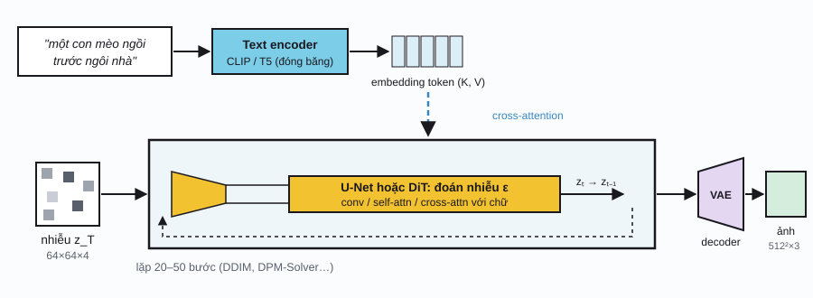

Transformer & genAI / Phần 3
AI đa phương thức
Mô hình đa phương thức làm việc với nhiều loại dữ liệu cùng lúc: văn bản, ảnh, âm thanh, video. Bí quyết chung là biến mọi thứ thành chuỗi vector, rồi để cùng một kiểu kiến trúc (Transformer) xử lý, và học một không gian chung nơi "ảnh con mèo" và chữ "con mèo" nằm gần nhau.
Mọi thứ thành token
Ở Phần 1, Transformer nhận một chuỗi \(n\) vector \(d\) chiều và không quan tâm chúng đến từ đâu. Vì vậy, để một mô hình hiểu được loại dữ liệu mới, ta chỉ cần một bộ token hóa (tokenizer) hoặc encoder riêng cho loại dữ liệu đó. Phần còn lại dùng chung.
| Phương thức | Cách biến thành token | Số token điển hình | Ví dụ mô hình |
|---|---|---|---|
| Văn bản | BPE / SentencePiece → embedding | ~1,3 token / từ tiếng Anh | GPT, Llama |
| Ảnh | Cắt thành patch 14×14 hoặc 16×16 → phép chiếu tuyến tính (ViT) | 196–2 000+ / ảnh | ViT, CLIP, SigLIP |
| Ảnh (để sinh) | VAE nén thành "ảnh ẩn"; hoặc VQ-VAE ra token rời rạc | 64×64×4 giá trị; 256–1 024 token | Stable Diffusion; Parti, Chameleon |
| Âm thanh | Phổ mel (ảnh 2D tần số × thời gian) → patch/conv; hoặc neural codec ra token rời rạc | ~50 token / giây | Whisper; AudioLM, EnCodec |
| Video | Patch không–thời gian (spacetime patches), thường trên video đã nén bằng VAE | Hàng chục nghìn | Sora, Veo, các mô hình video mở |
Vision Transformer
Vision Transformer (ViT) xử lý ảnh như một câu: cắt ảnh thành các patch vuông không chồng lấn, duỗi mỗi patch thành vector, nhân với một ma trận để ra embedding \(d\) chiều, thêm embedding vị trí và một token đặc biệt [CLS] mà vector đầu ra của nó dùng để phân loại cả ảnh.
Với kiến thức CNN của bạn: bước cắt patch + chiếu tuyến tính chính là một lớp tích chập có kernel \(P\times P\), stride \(P\) và \(d\) kênh đầu ra. Khác biệt nằm ở các lớp sau: thay vì tiếp tục chồng conv cục bộ, ViT dùng self-attention để mọi patch nhìn mọi patch ngay từ lớp đầu.
Ảnh 224×224, \(P = 16\): \(N = 14 \times 14 = 196\) patch, mỗi patch là vector \(16\cdot16\cdot3 = 768\) số.
Ảnh thành chuỗi token
Chọn kích thước patch; rê chuột lên ảnhCLIP & học tương phản
Làm sao để ảnh và chữ "nói chung một ngôn ngữ"? CLIP (Contrastive Language–Image Pre-training) huấn luyện hai encoder song song: một ViT cho ảnh, một Transformer cho chú thích, trên 400 triệu cặp (ảnh, chú thích) lấy từ Internet. Không cần gán nhãn thủ công: chú thích đi kèm ảnh chính là "nhãn".
Trong mỗi batch có \(B\) cặp, ta tính ma trận tương đồng \(B \times B\) giữa mọi ảnh và mọi chú thích. Các ô trên đường chéo là cặp đúng, còn lại là cặp sai. Hàm mất mát InfoNCE thực chất là cross-entropy "chọn đúng chú thích cho mỗi ảnh" (theo hàng) cộng "chọn đúng ảnh cho mỗi chú thích" (theo cột):
ûi, v̂j: embedding ảnh và chữ đã chuẩn hóa về độ dài 1 (nên tích vô hướng là cosine); τ: nhiệt độ, trong CLIP là tham số học được (khởi tạo 0,07).
Học tương phản kiểu CLIP
Bấm Huấn luyện; chỉnh nhiệt độ τPhân loại zero-shot. Muốn phân loại ảnh vào 1 000 lớp ImageNet mà không huấn luyện thêm? Viết 1 000 câu "a photo of a {lớp}", mã hóa chúng, rồi chọn câu có cosine cao nhất với ảnh. CLIP đạt độ chính xác ngang ResNet-50 huấn luyện có giám sát trên ImageNet theo cách này. Ô "Zero-shot" trong demo làm đúng việc đó.
Ngày nay CLIP và các biến thể (SigLIP, EVA-CLIP) là "đôi mắt" của rất nhiều hệ thống: tìm kiếm ảnh bằng chữ, text encoder trong Stable Diffusion đời đầu, và vision encoder của hầu hết các VLM ở Phần 4.
Cross-attention & text-to-image
Ghép các mảnh lại: mô hình diffusion (Phần 2) khử nhiễu một ảnh, text encoder (CLIP hoặc T5) biến prompt thành chuỗi vector. Cầu nối giữa hai bên là cross-attention: giống self-attention, nhưng query đến từ ảnh còn key và value đến từ văn bản.
Z ∈ ℝ(h·w)×d: đặc trưng của ảnh (mỗi vị trí là một hàng); T ∈ ℝm×d′: m token của prompt. Ma trận attention có kích thước \((h\cdot w) \times m\): mỗi vị trí ảnh phân phối attention lên các từ.
Cross-attention: chữ nào điều khiển vùng nào
Rê chuột lên một từ hoặc lên ảnh
Vì bản đồ cross-attention cho biết từ nào ảnh hưởng vùng nào, có thể chỉnh ảnh bằng cách can thiệp vào chúng: đổi "mèo" thành "chó" mà giữ nguyên bố cục (Prompt-to-Prompt), hay tăng trọng số một từ. Các mô hình mới như Stable Diffusion 3 và Flux thay cross-attention bằng cách nối thẳng token ảnh và token chữ vào cùng một chuỗi rồi chạy self-attention chung (kiến trúc MM-DiT): đúng tinh thần "mọi thứ thành token".
Âm thanh, video & mô hình "omni"
Âm thanh. Tín hiệu âm thanh 16 kHz có 16 000 mẫu mỗi giây, quá dài để làm token trực tiếp. Whisper chuyển nó thành phổ mel (mel spectrogram), một "ảnh" tần số theo thời gian, rồi dùng conv + Transformer encoder như ViT. Để sinh âm thanh, các neural codec như EnCodec nén âm thanh thành chuỗi token rời rạc, nhờ vậy mô hình tự hồi quy sinh giọng nói giống hệt cách sinh chữ.
Video. Video là ảnh thêm chiều thời gian. Các mô hình kiểu Sora nén video bằng VAE theo cả không gian và thời gian, cắt thành patch không–thời gian, rồi khử nhiễu bằng Diffusion Transformer.
Mô hình "omni". Xu hướng hiện nay là một mô hình duy nhất nhận và trả về nhiều phương thức (ví dụ GPT-4o, Gemini): chữ, ảnh, giọng nói đều là token trong cùng một ngữ cảnh. Phần 4 sẽ đi vào loại phổ biến nhất: VLM, LLM "nhìn" được ảnh.
Lịch sử
- 2015
Chú thích ảnh bằng CNN + RNN
Show and Tell (Google) và Show, Attend and Tell (Xu và cộng sự) nối một CNN với một RNN để viết chú thích cho ảnh; bản sau dùng attention trên các vùng ảnh.
- 2018
Học tương phản (CPC)
van den Oord và cộng sự đề xuất hàm mất mát InfoNCE trong Contrastive Predictive Coding; sau đó SimCLR, MoCo (2019–2020) đưa học tương phản thành phương pháp tự giám sát chủ đạo cho ảnh.
- 2020
ViT
Dosovitskiy và cộng sự (Google): "An Image is Worth 16x16 Words", đăng tại ICLR 2021.
- 2021
CLIP và DALL·E
OpenAI công bố CLIP (400 triệu cặp ảnh–chữ) và DALL·E (sinh ảnh tự hồi quy trên token ảnh rời rạc của một dVAE). Hai năm sau, CLIP trở thành thành phần chuẩn của sinh ảnh và VLM.
- 2022
Bùng nổ text-to-image
DALL·E 2 (4/2022), Imagen (5/2022), Midjourney và Stable Diffusion (8/2022). Whisper (9/2022) đưa nhận dạng giọng nói đa ngôn ngữ lên mức rất cao.
- 2023
SigLIP và LLaVA
SigLIP thay softmax bằng sigmoid trong hàm mất mát tương phản, huấn luyện hiệu quả hơn. LLaVA nối CLIP với một LLM, mở đường cho VLM mã nguồn mở.
- 2024
Mô hình omni, video, MM-DiT
GPT-4o xử lý chữ, ảnh, âm thanh trong một mô hình. Sora gây chú ý với video dài. Stable Diffusion 3 giới thiệu MM-DiT.
Tài liệu tham khảo
- A. Dosovitskiy et al., "An Image is Worth 16x16 Words: Transformers for Image Recognition at Scale", ICLR 2021. arXiv:2010.11929.
- A. Radford et al., "Learning Transferable Visual Models From Natural Language Supervision" (CLIP), ICML 2021. arXiv:2103.00020.
- R. Rombach et al., "High-Resolution Image Synthesis with Latent Diffusion Models", CVPR 2022. arXiv:2112.10752.
- A. Hertz et al., "Prompt-to-Prompt Image Editing with Cross Attention Control", 2022. arXiv:2208.01626.
- X. Zhai et al., "Sigmoid Loss for Language Image Pre-Training" (SigLIP), ICCV 2023. arXiv:2303.15343.
- A. Radford et al., "Robust Speech Recognition via Large-Scale Weak Supervision" (Whisper), 2022. arXiv:2212.04356.
- P. Esser et al., "Scaling Rectified Flow Transformers for High-Resolution Image Synthesis" (Stable Diffusion 3, MM-DiT), 2024. arXiv:2403.03206.